Contents
- 1What the Portal is, and why nowWhy every faculty member goes through it this year
- 2Who does whatDeans, assistant deans, program directors, and the offices that follow
- 3Before you startWhat to gather, and the rule to remember
- 4The Portal at a glanceWhere everything is
- 5Building a packet, step by stepFrom the first choice to the approval form
- 6What the questions are askingThe credential, the routes, and the transcripts
- 7When a standard is not metCompanion requests, exception-based review, emergencies, and transition plans
- 8Preparing a packet for your deanFor program directors, and for the dean or assistant dean who submits it
- 9After you submitThe approval route, the emails, and official transcripts
- 10Returned packets and correctionsCorrect a filed packet
- 11Adding or removing courses laterFollow-ups, removals, and appeals
- 12Common questionsThe ones we expect to hear most
- 13Who to contactThe people behind the Portal, and what each one covers
1What the Portal is, and why now
The Faculty Qualifications and Credentialing Portal is where BPCC documents that each faculty member is qualified for the academic courses they teach. You enter what the instructor's transcripts and records show, and the Portal measures it against each course's standard in the Discipline Matrix. What comes out is one PDF packet, which you submit for approval in Jotform and Academic Affairs files as the instructor's credential record.
The Portal is at fqc.joebrownlee.com. It runs in your browser and keeps nothing. What you enter and attach stays on your computer until you submit the packet yourself.
Why now
The revised Faculty Qualifications and Credentialing Policy takes effect January 1, 2027, and Spring 2027 is the first term under it. Every determination is made against its standards and the Discipline Matrix, whether the instructor is new to the College or has taught here for years. Prior teaching and length of service do not establish a qualification on their own (Section VI.1). The packets are also the College's evidence of faculty qualifications for its accreditor, The Commission on Colleges and Universities (formerly SACSCOC).
Each dean runs every current faculty member assigned to courses in the division through the Portal as a first submission by May 6, 2027 (Section VI.2). From Summer 2027 the policy applies in full to every individual it covers, new or continuing (Section VI.5).
For each course, the Matrix names the degree fields that count as the teaching discipline and any related fields, with the coursework that makes a related field count. It also names any requirement every instructor must meet. Where the Matrix sets a standard above the policy's baseline, it marks the standard and its reason, and the Matrix governs (Section V.1). The Portal loads every course's standard, so you never look one up by hand.
What a packet is
One packet records one determination for one instructor. It opens with a short report: the courses, the standard each was measured against, the credential, and the route the record takes through approval. Every supporting document follows it, merged in, with the record ID printed below each page. The Portal names and numbers every packet, for example FQC-L00456789-20261107-1026.
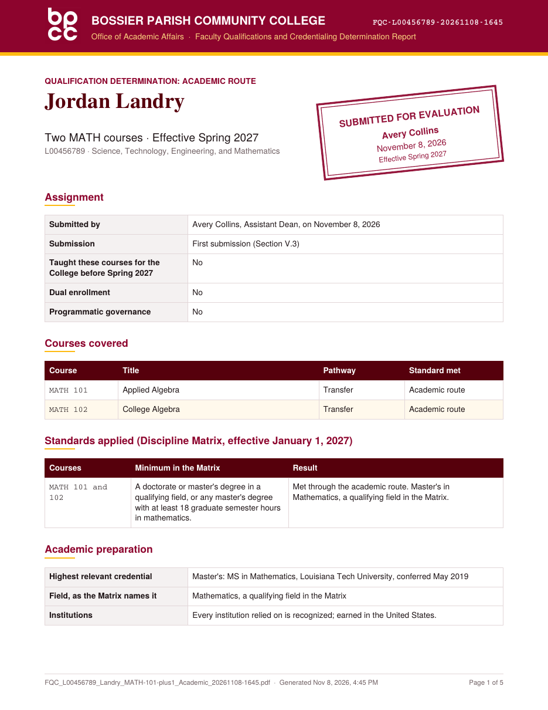
Timeline
| November 2026 | The Portal is open. Academic Affairs walks Academic Affairs, Enrollment Management and Student Services, and Human Resources leaders through the approval process on November 18. Packets are submitted once Academic Affairs announces that the approval workflow is live. |
| January 1, 2027 | The policy takes effect. Spring 2027 is the first term under it. |
| May 6, 2027 | A first submission is in for every current faculty member (Section VI.2). |
| Summer 2027 | The policy applies in full to every individual it covers, new or continuing (Section VI.5). |
No one begins teaching a course before Academic Affairs approves it and Human Resources confirms receipt of the official documentation (Section V.8). Faculty already teaching continue in their current assignments during the transition (Section VI.1). Packets for new instructors and new assignments come first, and current faculty follow by May 6, 2027.
2Who does what
Credentialing is an Academic Affairs process from start to finish. Divisions prepare and submit packets, and Academic Affairs makes the determination. Human Resources keeps the official documents but does not decide who teaches.
Deans and assistant deans
Gather the documentation and submit the packet for every full-time faculty member in the division. Review and submit the packets program directors prepare for adjuncts. The workflow's notices for the division's records go to the academic dean and the person who submitted.
Program directors
Gather the documentation and build the packet in full for each adjunct who teaches in the program, then send the PDF to the dean or assistant dean, who submits it. Section 8 walks through the handoff.
Academic Affairs
The Associate Vice Chancellor of Instruction (AVCI) or a designee evaluates every packet and concurs or returns it. The AVCI decides exception-based requests and authorizes emergency credentials, and Academic Affairs files every final record.
Human Resources
Confirms that the official transcripts and other official documentation are on file, and records official transcripts when they arrive. Human Resources keeps the personnel record. It does not clear anyone to teach.
Faculty Qualifications Review Committee
Reviews each exception-based request and recommends approval, approval with conditions, or denial to the AVCI (Section V.5). The submitting division's dean sits out that request.
Registrar and Admissions
The Registrar sets a newly approved instructor up in Banner on Academic Affairs' authorization. The Office of Admissions receives a copy of each approved dual enrollment determination for the roster (Section V.9).
Assign an instructor as instructor of record only after the Approved to teach email (or Approved to teach, transcripts due) arrives for the record (Section V.8). Academic Affairs sends the Registrar the authorization to set the instructor up in Banner, so the division no longer emails the Registrar.
3Before you start
A packet goes quickly when the documents are gathered first.
Have these ready
| What | Details |
|---|---|
| The instructor | First and last name and employee ID. Everyone credentialed in the Portal already has one from Human Resources: an L-number, or an H-number for some longtime employees. |
| The courses | Prefix and number for each course, all in one division. Courses in another division go in a separate packet, since each division's dean reviews its own courses (Section V.3). |
| Transcripts | For every institution relied on, degrees and coursework alike. Unofficial copies the instructor sends are enough to make the determination; the official transcripts go to Human Resources (section 9). |
| Licenses, certifications, and IBCs | For technical courses, with current standing and the expiration date. |
| Employment and experience | Verification letters or records whose documented duties cover the course content. Years of experience alone do not demonstrate competencies (Section IV). |
| Curriculum vitae or resume | Helpful for any instructor, and recommended for technical courses. |
| A foreign credential evaluation | A course-by-course evaluation for any degree or coursework earned outside the United States (Section V.2). |
| A closed institution's records statement | Only when an institution relied on has closed and its records do not survive: the statement that the records are unavailable, with the other evidence of the degree or coursework (Section V.2). |
| Learning outcomes | Only for an exception-based request: each course's student learning outcomes, from the master course outline or Simple Syllabus. |
The rule to remember
Nothing on the page is saved. The strip across the top of the Portal says so, and it stays there for a reason.
Save draft downloads a small file that reopens the form where you left off, through Open draft or packet. A draft lists the attached files by name but does not hold them, so you attach them again when you reopen it. Closing or refreshing the page without a draft or a download loses the work.
PDFs only
Every attachment must be a PDF. Save photos, scans, and Word documents as PDF first; the Portal refuses anything else and says which file it refused. A password-protected PDF cannot be merged into the packet. The packet lists it, and you attach it beside the packet when you submit.
Pages go into the packet reading upright. When a page's text runs sideways or upside down, the Portal turns it and says so under the file. A scan has no text to read, so the Portal says which pages are scans; choose Check pages and use Turn on any that are sideways. Undo puts a page back as it came. The packet's list of documents names the pages turned.
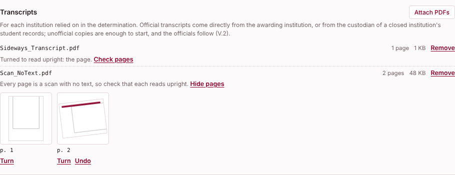
Which browser
The Portal works in any current browser. Chrome or Edge on a computer is easiest, since attaching files from a phone is awkward.
4The Portal at a glance
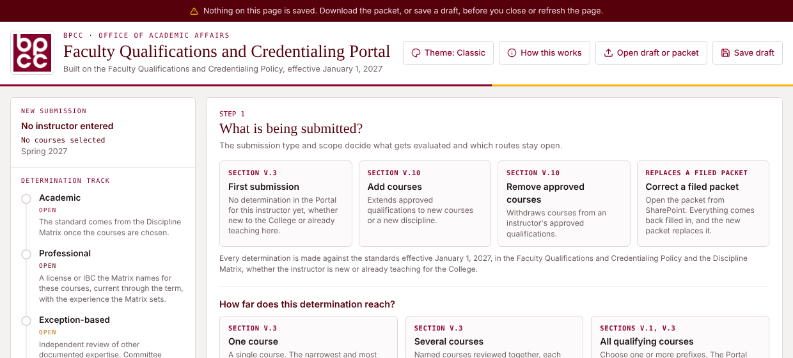
1 2 3 4 5The header buttons
| Theme | Five color themes: Classic, High contrast, Game day, Night, and Color-safe. A theme changes only the page, never the packet, and lasts until the page closes. |
| How this works | A short summary of the five steps, including how a program director's packet reaches the dean. |
| Open draft or packet | Reopens a saved draft, or a packet the Portal made. A packet opens with its choices: start a follow-up for the instructor, correct and reissue it, open its approval form if it was never submitted, or, for a packet a program director prepared, review and submit it. |
| Save draft | Downloads the form as it stands, without the attached files. |
The summary rail
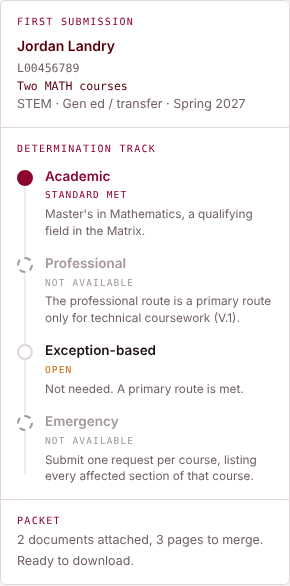
- Instructor and courses
- What the packet is about, and the effective term.
- Determination track
- The four routes, Academic, Professional, Exception-based, and Emergency, each marked as met, not met, open, or not available as you work.
- Packet
- How many documents are attached, and how many items are left before the packet can download.
The label at the foot of the page, Portal Build 2026-11-08b for example, is also recorded inside every packet and draft, so Academic Affairs can match a packet to the build that made it.
5Building a packet, step by step
The example below follows one instructor, Jordan Landry, with a master's in Mathematics, for MATH 101 and 102. Names and employee IDs in this guide are invented.
- Say what is being submitted.Choose First submission for anyone without a determination in the Portal, new to the College or already teaching here. Add courses and Remove approved courses change an instructor's approved courses later (section 11), and Correct a filed packet reissues one (section 10). Then choose how far the determination reaches: One course, Several courses named together, or All qualifying courses, where you choose one or more prefixes and the Portal finds every course whose standard the instructor meets.
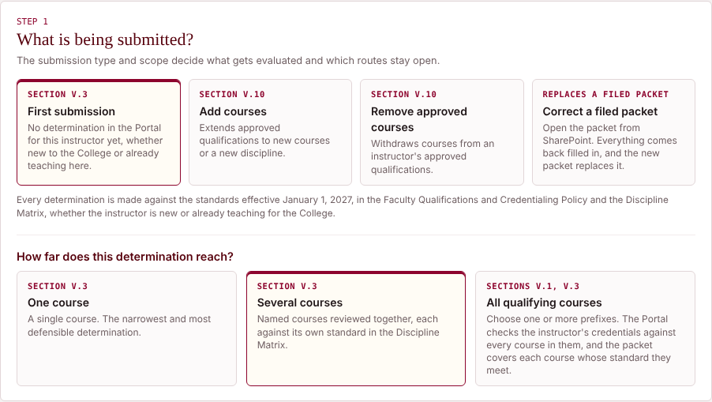
Step 1. Every determination is made against the standards effective January 1, 2027. - Choose the division and the courses.Click the division, choose a prefix, and click each course. Several courses can come from different prefixes in the same division. Each course carries its pathway in the Matrix (Transfer, Technical, or Developmental), and a course the Matrix does not list is marked Not in the Matrix and cannot be chosen. Below the list, a card for each standard shows the minimum, the qualifying and related fields, the 18-hour route where it applies, and anything required of every instructor.
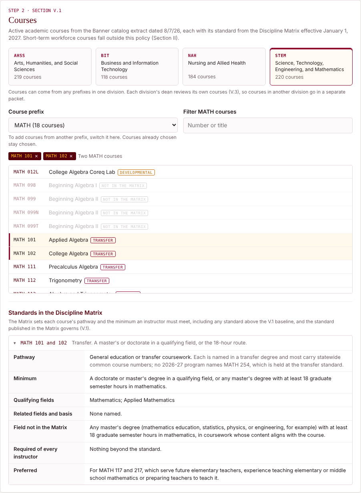
Step 2. MATH 101 and 102 share one standard, shown in full below the list. - Enter the instructor and the credential.Enter the name, employee ID, and effective term (Spring 2027 through Fall 2028; the Winter session belongs to Spring and Maymester to Summer). Answer the dual enrollment and programmatic governance questions. Then choose the highest relevant credential and its field from the list, which offers only the fields the Matrix names for every course chosen. Enter the credential's details as the transcript shows them, and confirm that every institution relied on was recognized. If one has since closed, section 6 says what to attach.
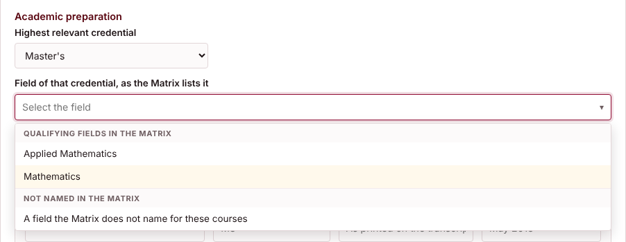
The field list. A degree whose field is not listed goes under A field the Matrix does not name for these courses. 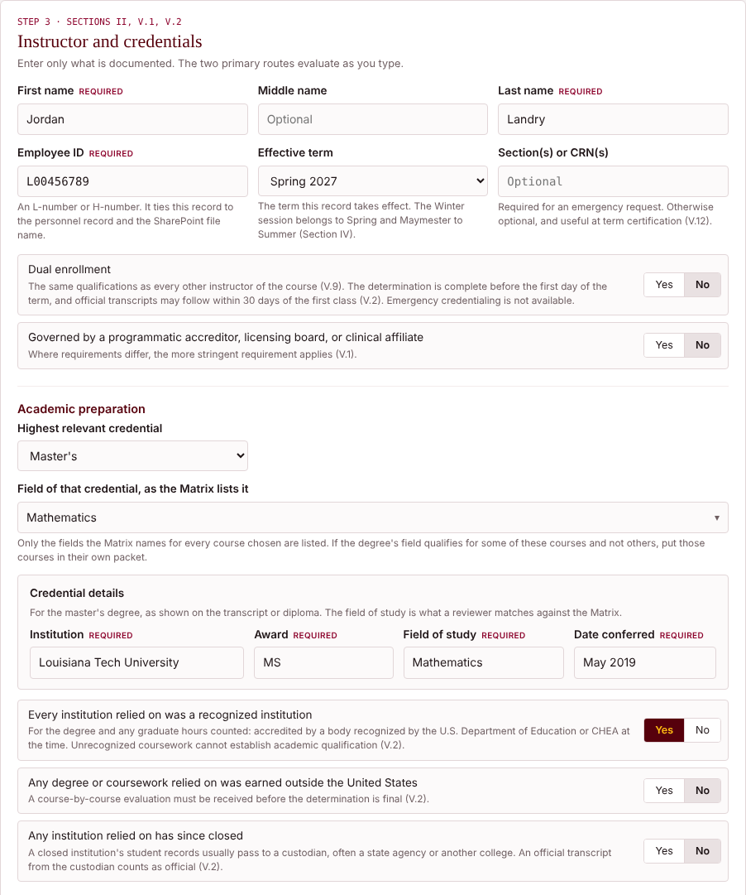
Step 3, the instructor and the credential. - Attach the documents and answer the transcript questions.Attach each document under its type. Tags mark what this record requires. Once transcripts are attached, the Portal asks whether they are official and, if not, whether Human Resources already holds the officials. Section 6 explains what each answer does.
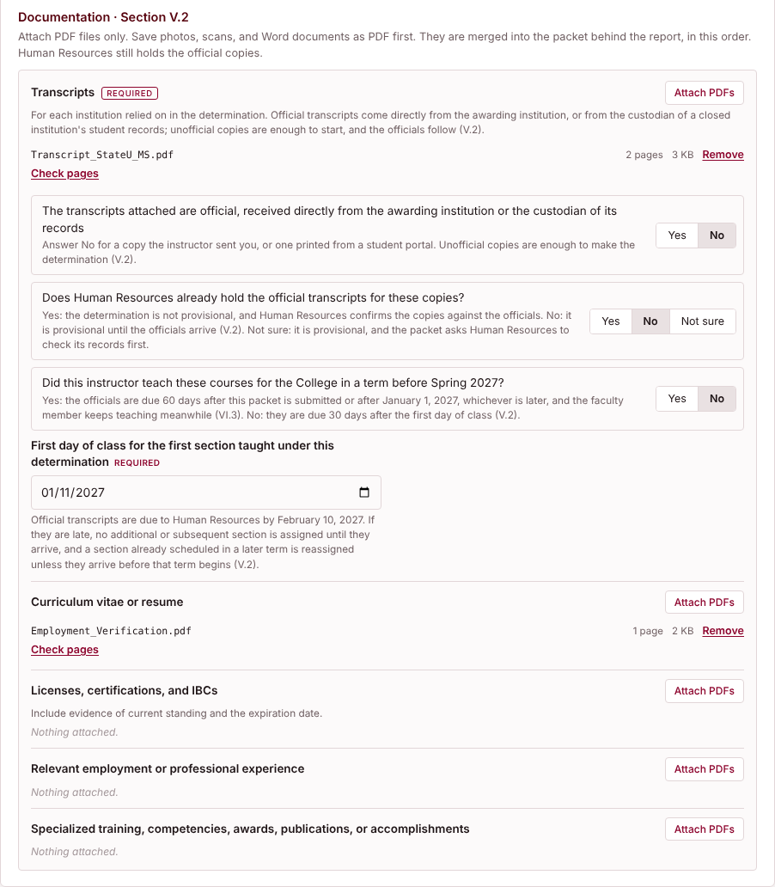
Unofficial copies with the officials not yet on file make the determination provisional, and the Portal works out the due date. - Read the determination.Step 4 evaluates each route course by course as you type. When a route is met, the record proceeds as a standard review under Section V.3. When none is met, Step 4 says why and offers what comes next (section 7). Expedited review is requested here (section 6).
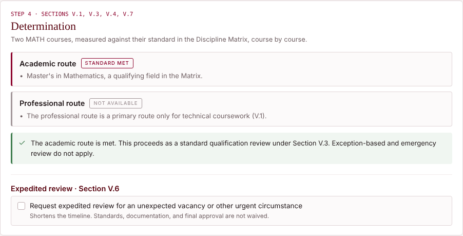
Step 4. The academic route is met through a master's in a qualifying field. - Say who submits, sign, and download.Step 5 asks who submits the packet in Jotform. Deans and assistant deans choose I do. Program directors preparing a packet for an adjunct choose My academic dean or assistant dean (section 8). Enter your name, title, BPCC email, and the date. Until everything required is in, a list names what is missing.
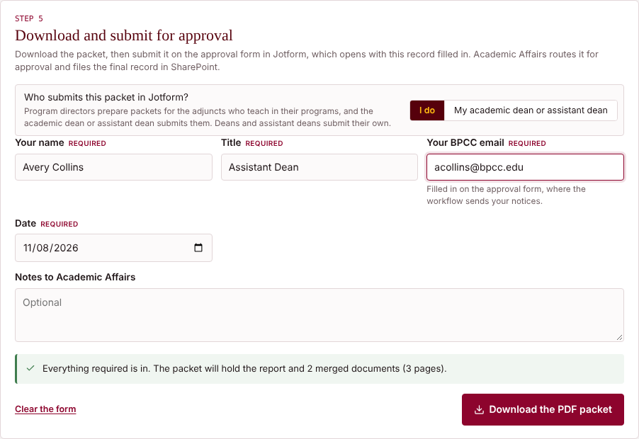
Step 5 for a dean or assistant dean who submits the packet. - Submit it in Jotform.After the download, Submit for approval opens the approval form in a new tab with the record filled in. Attach the PDF you just downloaded, which the browser cannot do for you, along with any files the Portal listed as not merged. Check the details against the packet, check the attestation, and submit.
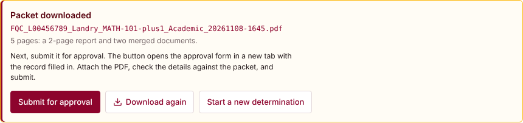
After the download. A determination and its companion request each get their own button.
6What the questions are asking
Enter only what is documented. Each answer below changes what the Portal evaluates or what the packet asks for.
The field of the credential
The list holds only the fields the Matrix names for every course chosen, grouped as qualifying fields and related fields. Everything else goes under A field the Matrix does not name for these courses. If no single field covers every course you chose, the Portal says so; choose the courses one standard at a time, or use All qualifying courses.
A related field
A related field counts as the teaching discipline only with documented coursework, never by inference (Section IV). When you choose one, the Portal shows the basis the Matrix sets, and you list the transcript courses that meet it.
The 18-hour route
Where the Matrix offers it, a master's or doctorate in a field the Matrix does not name qualifies with at least 18 graduate semester hours in the subject the route names. List every graduate course relied on, one row each, as the transcript shows it. Quarter hours convert at two-thirds of a semester hour, and totals are never rounded up. Thesis, practicum, internship, and research hours count only with a note on how their content is directly relevant (Section IV).
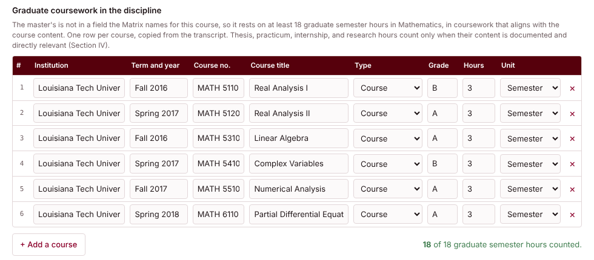
An associate degree and demonstrated competencies
For technical courses where the Matrix offers the associate option, an associate degree in the discipline also needs documented demonstrated competencies. Describe them, and attach the license, certification, IBC, training record, or employment record whose documented duties cover the course content. Years of experience alone do not count (Section IV).
The professional route
For technical coursework only, and only where the Matrix publishes a professional standard. The instructor holds the license or IBC the Matrix names, in good standing and current through the end of the term, with at least the years of documented experience the Matrix sets and recent practice. A vendor's certification counts only for a course that teaches that vendor's product (Section IV). Attach the credential and the experience documentation.
Required of every instructor
Some courses carry a requirement every instructor must meet, such as a current license or a certification an outside body requires. The Portal asks each one only for the standards the instructor otherwise meets. Answer each Documented or Not documented (some also offer Does not apply). Not documented means the standard is not met. Each one marked Documented adds its document to the list of what to attach. For CTEC 297, name the CTEC course whose content the approved topic covers; what the Matrix requires of every instructor of that course applies to CTEC 297 too.
Institutions
Every institution relied on, for the degree or any coursework counted, must have been accredited by a body recognized by the U.S. Department of Education or CHEA at the time (Section V.2). A degree or coursework earned outside the United States needs a course-by-course evaluation before the determination is final.
When an institution relied on has closed, its student records usually pass to a custodian, often a state agency or another college. An official transcript from the custodian counts as official, and the transcript questions below apply to it as to any other. When the records do not survive, the instructor provides a written statement that they are unavailable, from the custodian or the state agency responsible for them, with any other evidence of the degree or coursework, such as the diploma or a licensing board's verification. Attach it under Closed institution. The Associate Vice Chancellor of Instruction decides whether that evidence documents the degree or coursework, and if it does, it stands in place of that institution's official transcripts. Transcripts from any other institution relied on are still required (Section V.2).
Transcripts
A determination can rest on unofficial transcript copies. Once transcripts are attached, the Portal asks three things.
| Question | What each answer does |
|---|---|
| Are the transcripts attached official? | Official means received directly from the awarding institution, or from the custodian of a closed institution's records. A copy the instructor sent, or one printed from a student portal, is not. |
| Does Human Resources already hold the officials? | Yes: the determination is not provisional, and Human Resources confirms the copies against the officials. No: it is provisional until the officials arrive. Not sure: it is provisional, and the packet asks Human Resources to check its records first. |
| Did the instructor teach these courses for the College before Spring 2027? | Asked only on a provisional Spring 2027 packet. Yes: the officials are due 60 days after the packet is submitted or after January 1, 2027, whichever is later (Section VI.3), and the faculty member keeps teaching meanwhile. No: they are due 30 calendar days after the first day of class for the first section taught under the determination, which you enter (Section V.2). |
The packet prints the due date. Section 9 explains what happens if the officials are late.
Dual enrollment
A dual enrollment instructor meets the same qualifications as every other instructor of the course (Section V.9). The Portal asks whether a partner school employs the instructor. Official transcripts go to Human Resources like everyone else's, and Academic Affairs sends the Office of Admissions a copy once the determination is approved. Emergency credentialing is not available for dual enrollment.
Programmatic governance
When a programmatic accreditor, licensing board, or clinical affiliate sets instructor requirements, the more stringent requirement applies (Section V.1). Name the body and confirm the requirement is documented as met.
Expedited review
For an unexpected vacancy or other urgent circumstance, request expedited review in Step 4, describe the circumstance, and record whether the AVCI's concurrence was obtained or is requested with the packet. It shortens the timeline and waives nothing (Section V.6). For an exception-based request, a subcommittee acts within three business days, and the full Committee ratifies at its next meeting. If the Committee does not ratify an approval, the AVCI records a denial: a section already under way finishes the term, nothing more is assigned under it, and you may request reconsideration.
7When a standard is not met
Step 4 says plainly when a route is not met and why. What comes next depends on whether some of the courses are met or none are.
Some courses met, others not
One packet records one determination, so the Portal asks you to split the set. For courses you named, it offers three ways.
| Send the others to a companion request | The packet covers the courses met, and the others go to exception-based review in a second packet downloaded with it, in one sitting. A course short only on a requirement of every instructor goes in as it stands. Any other course goes in only with the coursework you list toward it. |
| Set the others aside | The packet covers the courses met. After it downloads, Start the packet for the other courses carries the instructor and the credential, with the documents, into the next one. |
| Request exception-based review | Keep only the courses not met, for an exception-based request in this packet. |
With All qualifying courses, the packet covers every course met in the prefixes searched, and any of the others can go to a companion request. A companion request shares the determination's record ID with -2 at the end. Each packet is submitted on its own.
Exception-based review
For named courses only (Sections V.4, V.5). The request needs all six elements: the courses, how the standard is not met, the qualifications relied on, why approval will not diminish the quality of instruction (with any mentoring, supervision, or conditions), the supporting evidence, and the relation to each course's learning outcomes. That last element is written course by course beside the catalog description, with the outcomes pasted from the master course outline or Simple Syllabus. The Portal flags qualifications that read as length of experience alone.
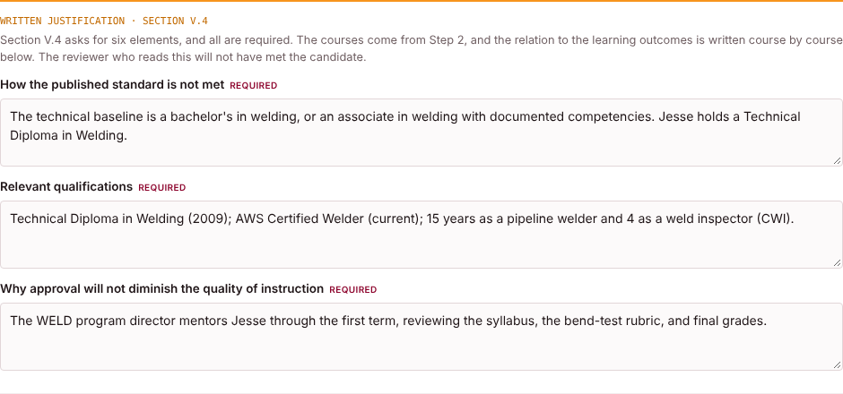
The AVCI seats the Faculty Qualifications Review Committee for the request. The Committee recommends within 10 business days of a complete request, and the AVCI approves, approves with conditions, or denies. An approval covers only the courses in the request and goes on the roster of qualification exceptions (Section V.11). If a request is denied, the dean may request reconsideration from the Vice Chancellor for Academic Affairs and Institutional Effectiveness within 10 business days of the final determination, with additional documentation (Section V.5). Open the request's packet with Open draft or packet and choose Request reconsideration. Enter the date of the final determination, choose the courses, write why the determination should be reconsidered and what the added documents show, and attach them. The Portal downloads one reconsideration packet, with the denied packet merged behind the documents, and Submit to the VCAA opens the reconsideration form with the record filled in. The Vice Chancellor's decision is final.
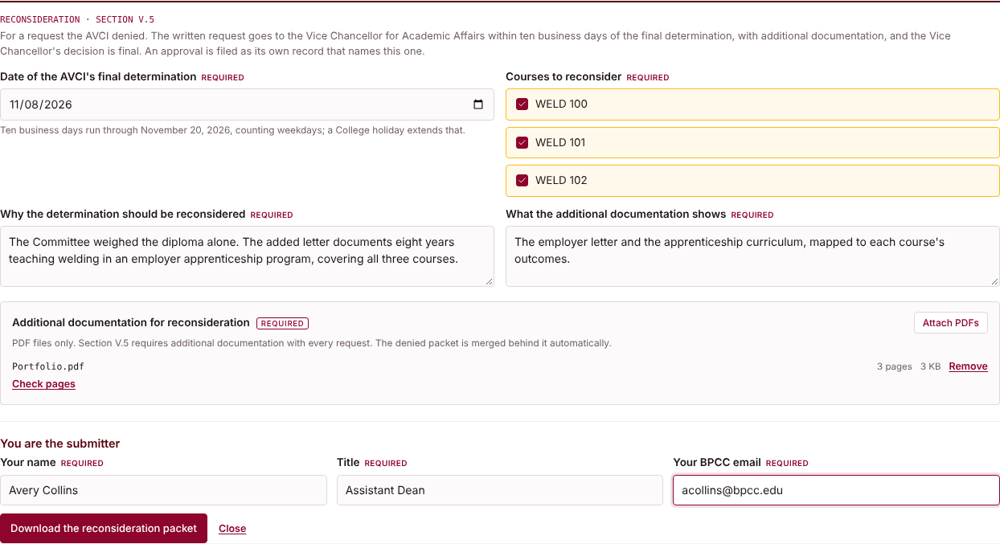
The NURS standard allows a BSN-prepared nurse to teach only under an exception the Louisiana State Board of Nursing approves. The Portal asks for the kind of exception, its dates, and the LSBN approval letter, and the record goes as an exception-based request. Without LSBN's approval, exception-based review is not available.
Emergency credentials
For one course, when no qualified instructor can be found in time (Section V.7). Name each section by CRN, describe the circumstance, and give a reason for each of the four alternatives the policy lists, for every section. Add the documented basis, the mentor, the acknowledgments, and any prior emergency use. Emergency credentialing is not available for dual enrollment or a programmatically governed course. It remains a request until the AVCI authorizes it, and the Vice Chancellor is notified within three business days. An emergency credential expires at the end of the term the sections are scheduled in and cannot be renewed.
Transition plans
Only for a faculty member who taught the courses for the College before Spring 2027, in two cases. After an exception-based request is not approved (Section VI.4), open the request's packet and choose Start a transition plan. When official transcripts due under Section VI.3 have not arrived by their due date, open that packet and choose Start a transition plan (Section VI.3), after meeting with the faculty member. Both are offered through Spring 2027. The plan sets out the actions and their completion date, with the dean who monitors it. The faculty member may teach the courses through Spring 2027 and not after unless qualified. Where no qualifying assignment remains, a College employee's contract is not renewed.
8Preparing a packet for your dean
Program directors prepare packets for the adjuncts who teach in their programs, and the academic dean or assistant dean submits them. The packet travels as the PDF itself, which carries everything the dean needs to submit it.
Preparing and sending the packet
- Build the packet in full.Follow section 5 for an adjunct who teaches in your program, with every document attached and every question answered.
- In Step 5, choose My academic dean or assistant dean.Enter your name, title, BPCC email, and the date. The packet prints your name and title as Prepared by.
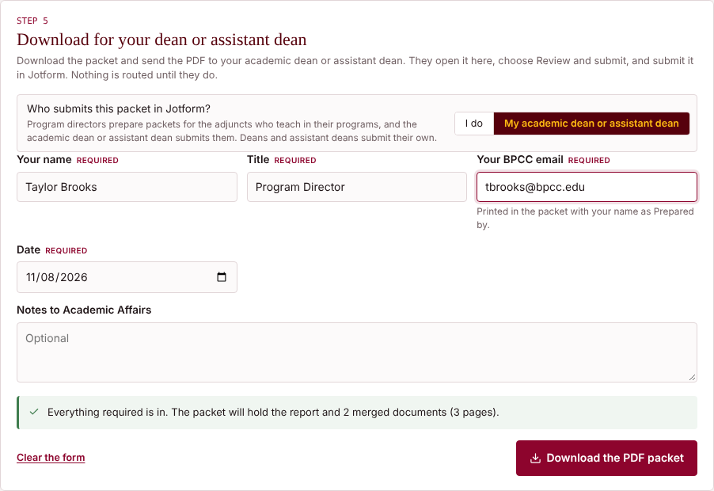
Step 5 for a packet prepared for the dean or assistant dean. - Download it and send the PDF.Send it to your dean or assistant dean by email or Teams, with any files the Portal listed as not merged. Do not submit it in Jotform yourself; nothing is routed until your dean does.
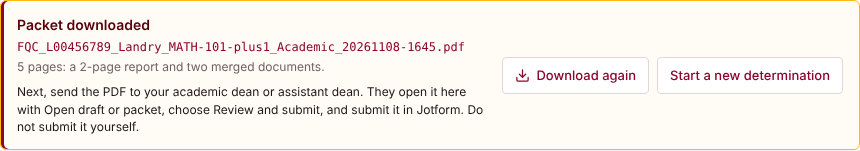
A prepared packet has no Submit for approval button.
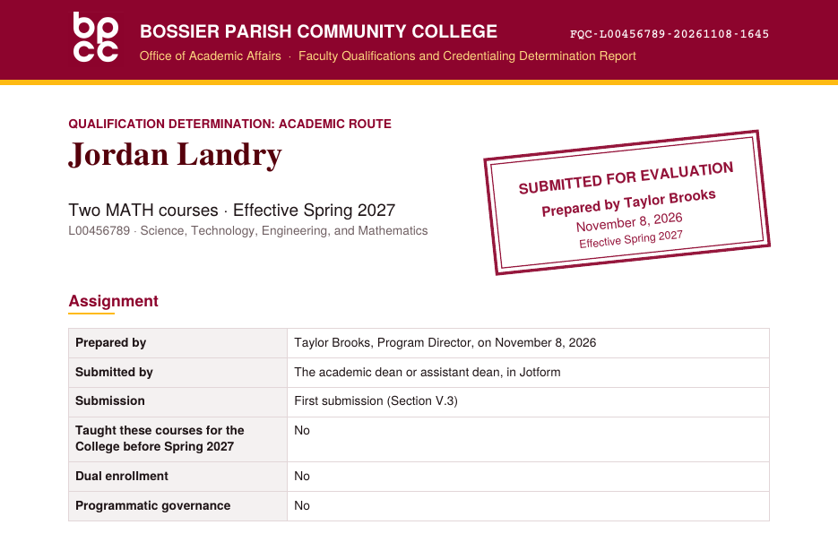
If your dean asks for a change, open the PDF in the Portal, choose Reopen to edit, attach the documents again, make the change, and choose My academic dean or assistant dean again in Step 5. The new packet takes a new record ID, and you send it in place of the first.
Reviewing and submitting it
- Open the PDF in the Portal.Choose Open draft or packet and pick the file. A prepared packet opens with who prepared it and two choices.
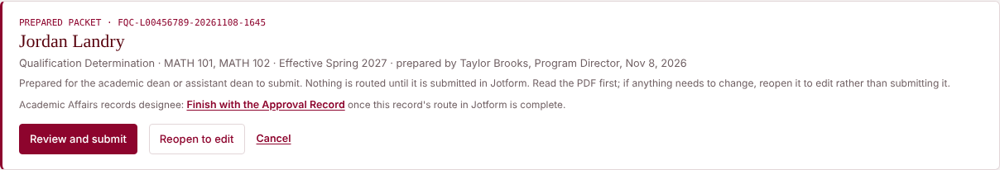
A prepared packet, with Review and submit and Reopen to edit. - Read the packet.Check the courses, the credential, the answers, and the documents in the PDF itself. If anything needs to change, choose Reopen to edit instead of submitting it.
- Choose Review and submit, and sign as the submitter.Enter your name and title, and the BPCC email where the workflow should send its notices. Submit for approval opens the approval form with the record filled in and you as the submitter, so the workflow's notices come to you.
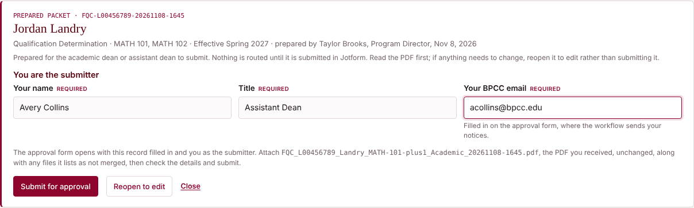
Review and submit. The record ID and file name are the ones the program director downloaded. - Attach the same PDF and submit.Attach the PDF you received, unchanged, and any files it lists as not merged. Then check the attestation and submit. The program director does not receive the workflow's emails, so let them know how it turns out.
Reopen to edit loads the packet into the form with the program director still named as Prepared by. Attach the documents again from the PDF, make the change, and sign Step 5 as the submitter. Because the original was never submitted, the new packet takes a new record ID and replaces nothing. A determination with a companion request arrives as two PDFs; open and submit each one.
9After you submit
Each packet becomes one submission in Jotform, and the approval workflow routes it by record type. Every decision and signature is recorded on that submission.
The approval form
The Portal fills in the record's details. Attach the PDF and check the attestation that it is the file the Portal produced, accurate and complete, then submit. On a provisional record, the due date and the section it falls under (Section V.2 or VI.3) come filled in. A packet a program director prepared also carries the program director's email, so the notices reach them too. A thank-you page then summarizes what happens next.
The approval route
The packet prints its own route in its Approval route section. In outline:
| Record | Route |
|---|---|
| Academic or professional | The AVCI or designee concurs or returns the packet (Section V.3). Human Resources confirms the official documentation is on file. Academic Affairs authorizes the Registrar, and you receive Approved to teach. |
| Exception-based request | The AVCI seats the Committee or, for expedited review, a subcommittee. The Committee recommends, and the AVCI decides. An approval then goes through Human Resources and the Registrar like a determination. |
| Emergency request | The AVCI authorizes the named sections or does not. The Vice Chancellor is notified, Academic Affairs authorizes the Registrar, and Human Resources places the official documentation in the personnel record. |
| Removal | The AVCI decides on a section in progress when that applies. Academic Affairs updates the record and sends the instructor written notice. |
| Transition plan | The AVCI establishes the plan with the academic dean. |
Every route ends with the Academic Affairs records designee, who opens the packet in the Portal, adds the signed Approval Record after the report with Finish with the Approval Record, and files the final packet in the Faculty Credentialing library. It is kept for the duration of employment and five years after, and exception records at least through the College's next reaffirmation (Section V.11).
The emails you will receive
Each email goes to the academic dean and the submitter, and to the program director who prepared the packet, with the AVCI copied, and replies reach Academic Affairs. The record table in each one names the instructor, the courses, the term, and the record ID.
| What it means, and what to do | |
|---|---|
| Approved to teach | Every official document is on file. Once the Registrar has set the instructor up, assign them as instructor of record. Nothing more is needed. |
| Approved to teach, transcripts due | Approved provisionally. Have each institution send an official transcript directly to Human Resources by the date in the email. |
| Official transcripts received | Human Resources recorded the officials. The approval is no longer provisional. |
| Returned for correction | Academic Affairs returned the packet, with the reason. Correct it and submit it again (section 10). |
| Official documentation needed | Human Resources could not confirm a document. Have the instructor send the official copy to Human Resources, then submit again with Correct a filed packet. A transcript that contradicts the packet is reported to the AVCI under Section V.12. |
| Assignment hold | The official transcripts are past due. Assign no additional or subsequent section until they arrive. |
| Assignment hold lifted | The officials arrived, and the instructor may be assigned again. |
| Exception-based outcomes | Exception approved, Exception not approved, or More documentation requested. An approval is followed by Approved to teach once Human Resources confirms the documentation. |
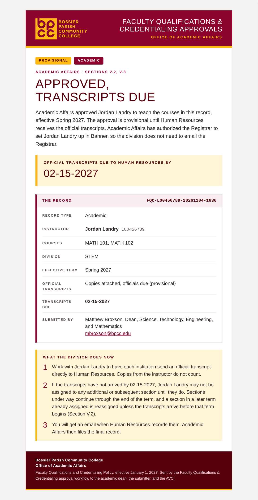
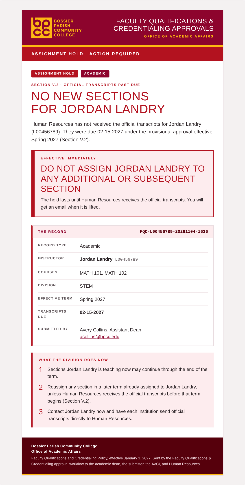
Official transcripts and holds
Official transcripts come directly from the awarding institution to Human Resources; copies from the instructor do not count. When they are late, the instructor may not be assigned to any additional or subsequent section until they arrive (Section V.2). Sections already under way continue through the end of the term. A section in a later term that was already assigned is reassigned unless the transcripts arrive before that term begins.
For a faculty member whose officials are due under Section VI.3, Human Resources confirms the day after the due date whether they arrived. If they did not, Human Resources notifies the dean and Academic Affairs. The dean meets with the faculty member and may set a transition plan with the AVCI, started from that packet with Start a transition plan (Section VI.3).
10Returned packets and corrections
A returned packet is corrected from the packet itself. Nothing has to be typed again.
- Open the original packet.In Step 1, choose Correct a filed packet and pick the PDF, or choose Open draft or packet and then Reopen to correct and reissue.
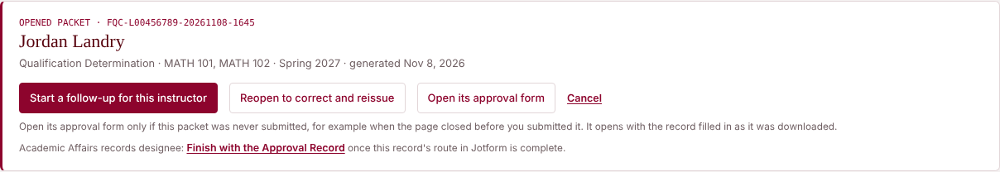
An opened packet. Open its approval form is only for a packet that was never submitted. - Attach the documents again.Everything comes back filled in except the attachments, which are inside the original PDF. Attach them again, or remove them from the lists.
- Make the change and submit.Answer Step 5 again and download. The new packet prints Record this replaces with the original's record ID, and Academic Affairs marks the original Superseded. Submit it like any other packet.
The same steps answer a Committee's request for more documentation; the review period starts again when the request arrives complete. They also correct an error found in a filed packet later.
11Adding or removing courses later
An instructor's approved courses change through a follow-up to the record on file.
Adding courses
Open the instructor's most recent packet with Open draft or packet and choose Start a follow-up for this instructor. The instructor carries over, and the earlier record is named as the record on file. Choose Add courses in Step 1 and continue as for a first submission. Add courses also covers a new discipline. When the approval on file predates the Portal, start a new packet, choose Add courses, and leave the record on file blank.
Removing approved courses
Start a follow-up the same way and choose Remove approved courses (Section V.10). Say who initiated the removal, the academic dean or designee or Academic Affairs, and choose the reason; another documented reason must be written out. If the instructor is teaching the courses now, the Portal asks whether a section is in progress and whether an outside body sets a mandatory instructor qualification. Without one, the AVCI decides whether the section may finish the term.
Academic Affairs updates the record and notifies the instructor in writing. A removed course returns only through a new qualification review. The instructor may appeal within 10 business days of the notice: to the AVCI and then the Vice Chancellor when the dean initiated the removal, or directly to the Vice Chancellor when Academic Affairs did. The Vice Chancellor's decision is final, and the removal stands while an appeal is pending.
12Common questions
- This instructor has taught here for years. Do they still need a packet?
- Yes. Every current faculty member goes through the Portal as a first submission by May 6, 2027, measured against the standards effective January 1, 2027 (Section VI.2). Prior teaching and length of service do not establish a qualification on their own. Faculty continue in their current assignments while the transition runs (Section VI.1).
- Who prepares the packet for an adjunct?
- The program director of the program the adjunct teaches in, who sends it to the dean or assistant dean to submit (section 8). Deans and assistant deans prepare and submit packets for full-time faculty.
- An adjunct teaches in two of our programs.
- Courses in one division can go in one packet, so agree with the other program director on who prepares it. Courses in another division always need their own packet, prepared and submitted through that division.
- Can I use the transcript copies the instructor sent me?
- Yes. A determination can rest on unofficial copies. If Human Resources does not already hold the officials, the determination is provisional until they arrive, and the packet prints the due date (section 6).
- The course I need is not in the list, or shows Not in the Matrix.
- The Portal lists the active academic courses in the Banner extract dated 8/7/26, and a course the Matrix does not list cannot be determined. Those are courses leaving the catalog. If you need one, contact Academic Affairs before building the packet.
- The instructor's degree field is not in the field list.
- Choose A field the Matrix does not name for these courses. Where the Matrix offers the 18-hour route, list the graduate coursework. Otherwise the academic route is not met, and Step 4 offers exception-based review.
- I closed the page after downloading and never submitted the packet.
- Open the PDF with Open draft or packet and choose Open its approval form. It opens with the record filled in as it was downloaded. Use it only for a packet that was never submitted.
- A PDF will not attach or merge.
- The Portal takes PDFs only and names any file it refused. A password-protected PDF attaches but cannot be merged; the packet lists it, and you attach it beside the packet when you submit.
- Does the Portal keep a copy of anything?
- No. It runs in your browser and sends nothing on its own. The packet and any drafts are saved only to your computer, and the record reaches Academic Affairs only when the packet is submitted in Jotform.
- Who can see a filed packet?
- Packets carry employee IDs and transcript copies, so the Faculty Credentialing library is closed to general staff. Ask Academic Affairs for a copy of a filed record.
13Who to contact
Questions? We're here to help!
The Portal, determinations, and the approval workflow
Accreditation Liaison
The Discipline Matrix and accreditation questions
Official transcripts, and what is already on file
If you'd like to work through a first packet together or talk through a question, Joe Brownlee and Dr. Megan Bange are happy to meet. Book with Joe for anything about the Portal and your packets, or with Dr. Bange for the Discipline Matrix and accreditation questions. Pick a time that works for you, and the call is set up in Teams.